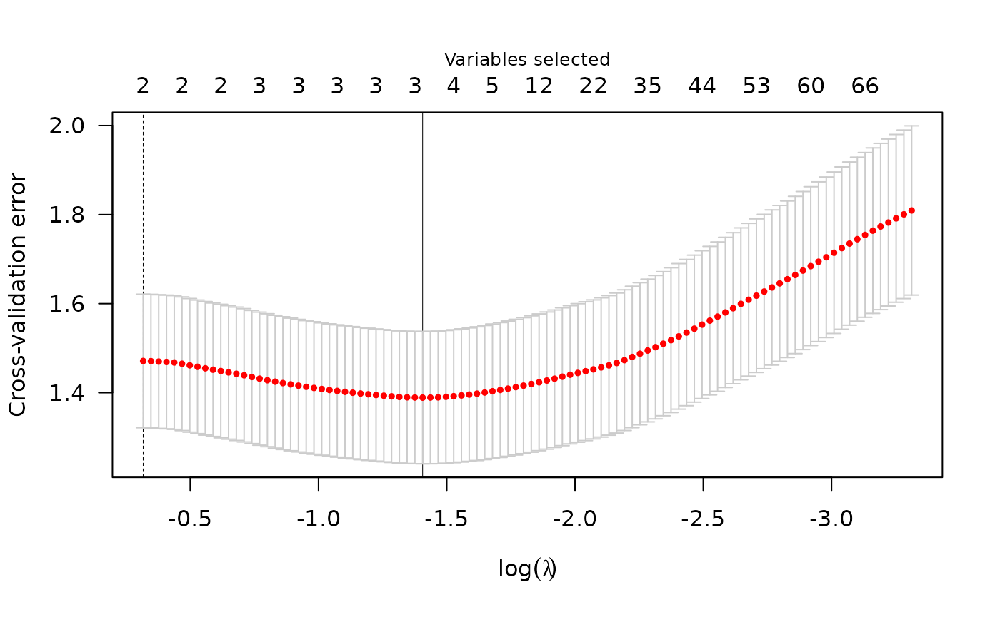

If your data is in a matrix or data frame
matrix_data.Rmd
library(plmmr)
#> Loading required package: bigalgebra
#> Loading required package: bigmemoryIn this overview, I will provide a demo of the main functions in
plmmr using the admix data. Checkout the other
vignettes to see examples of analyzing data from PLINK files or
delimited files.
Examine what we have in the admix data:
str(admix)
#> List of 3
#> $ X : int [1:197, 1:100] 0 0 0 0 1 0 1 0 0 0 ...
#> ..- attr(*, "dimnames")=List of 2
#> .. ..$ : NULL
#> .. ..$ : chr [1:100] "Snp1" "Snp2" "Snp3" "Snp4" ...
#> $ y : num [1:197, 1] 3.52 3.754 1.191 0.579 4.085 ...
#> $ race: num [1:197] 1 1 1 1 1 1 1 1 1 1 ...Preparing data for analysis
The first step with in-memory data is creating a
plmm_design object, which we do with
create_design() like this:
admix_design <- create_design(X = admix$X, outcome_col = admix$y)
str(admix_design)
#> List of 12
#> $ std_X : num [1:197, 1:98] -0.398 -0.398 -0.398 -0.398 2.053 ...
#> ..- attr(*, "dimnames")=List of 2
#> .. ..$ : NULL
#> .. ..$ : chr [1:98] "Snp1" "Snp2" "Snp3" "Snp4" ...
#> ..- attr(*, "center")= num [1:100] 0.16244 0.15228 0.00508 0.30964 0.01015 ...
#> ..- attr(*, "scale")= num [1:100] 0.4081 0.3593 0.0711 0.5793 0.1002 ...
#> ..- attr(*, "nonsingular")= int [1:98] 1 2 3 4 5 6 7 9 10 11 ...
#> $ std_X_n : int 197
#> $ std_X_p : int 98
#> $ ns : int [1:98] 1 2 3 4 5 6 7 9 10 11 ...
#> $ std_X_center : num [1:100] 0.16244 0.15228 0.00508 0.30964 0.01015 ...
#> $ std_X_scale : num [1:100] 0.4081 0.3593 0.0711 0.5793 0.1002 ...
#> $ X_colnames : chr [1:100] "Snp1" "Snp2" "Snp3" "Snp4" ...
#> $ n : int 197
#> $ p : int 100
#> $ y : num [1:197, 1] 3.52 3.754 1.191 0.579 4.085 ...
#> $ std_X_colnames: chr [1:98] "Snp1" "Snp2" "Snp3" "Snp4" ...
#> $ penalty_factor: num [1:98] 1 1 1 1 1 1 1 1 1 1 ...
#> - attr(*, "class")= chr "plmm_design"‘Creating a design’ means that we take the processed data and create
the three essential elements for data analysis: a design matrix that is
column-standardized, an outcome vector, and a penalty factor indicator.
In our math notation, the design
matrix is
,
the outcome vector is
,
and the penalty factor indicator is a vector of 1s and 0s, where 1s
correspond to the features in
that will be penalized (and the 0s correspond to the unpenalized added
predictors). Note that in our current admix_design, all
features are penalized (i.e., the penalty factor is a vector of 1).
Basic model fitting
The admix dataset is now ready to analyze with a call to
plmmr::plmm() (one of the main functions in
plmmr):
admix_fit <- plmm(design = admix_design)
summary(admix_fit, lambda = admix_fit$lambda[50])
#> lasso-penalized regression model with n=197, p=101 at lambda=0.01380
#> -------------------------------------------------
#> The model converged
#> -------------------------------------------------
#> # of non-zero coefficients: 85
#> -------------------------------------------------The returned beta_vals item is a matrix whose rows are
coefficients and whose columns represent values of the penalization
parameter
.
By default, plmm fits 100 values of
(see the setup_lambda function for details).
admix_fit$beta_vals[1:10, 97:100] |>
knitr::kable(digits = 3,
format = "html")| 0.00052 | 0.00048 | 0.00045 | 0.00042 | |
|---|---|---|---|---|
| (Intercept) | 7.020 | 7.021 | 7.022 | 7.022 |
| Snp1 | -0.841 | -0.841 | -0.841 | -0.842 |
| Snp2 | 0.199 | 0.199 | 0.199 | 0.199 |
| Snp3 | 3.580 | 3.581 | 3.581 | 3.581 |
| Snp4 | 0.189 | 0.190 | 0.190 | 0.190 |
| Snp5 | 0.588 | 0.588 | 0.589 | 0.589 |
| Snp6 | -0.135 | -0.135 | -0.135 | -0.135 |
| Snp7 | 0.207 | 0.208 | 0.208 | 0.208 |
| Snp8 | 0.000 | 0.000 | 0.000 | 0.000 |
| Snp9 | 0.310 | 0.310 | 0.310 | 0.310 |
Note that for all values of , SNP 8 has . This is because SNP 8 is a constant feature, a feature (i.e., a column of ) whose values do not vary among the members of this population.
We can summarize our fit at the nth value:
# for n = 25
summary(admix_fit, lambda = admix_fit$lambda[25])
#> lasso-penalized regression model with n=197, p=101 at lambda=0.07896
#> -------------------------------------------------
#> The model converged
#> -------------------------------------------------
#> # of non-zero coefficients: 46
#> -------------------------------------------------We can also plot the path of the fit to see how model coefficients vary with :
plot(admix_fit)Plot of path for model fit
Suppose we also know the ancestry groups with which for each person
in the admix data self-identified. We would probably want
to include this in the model as an unpenalized covariate (i.e., we would
want ‘ancestry’ to always be in the model). Here is how that could
look:
X_plus_ancestry <- cbind(admix$race, admix$X)
colnames(X_plus_ancestry) <- c("ancestry", colnames(admix$X))
# create a new design
admix_design2 <- create_design(X = X_plus_ancestry,
outcome_col = admix$y,
# below, I mark ancestry variable as unpenalized
# we want ancestry to always be in the model
unpen = "ancestry")
# now fit a model
admix_fit2 <- plmm(design = admix_design2,
outcome_col = admix$y)We may compare the results from the model which includes ‘ancestry’ to our first model:
summary(admix_fit2, idx = 25)
#> lasso-penalized regression model with n=197, p=102 at lambda=0.09986
#> -------------------------------------------------
#> The model converged
#> -------------------------------------------------
#> # of non-zero coefficients: 15
#> -------------------------------------------------
plot(admix_fit2)
Cross validation
To select a
value, we often use cross validation. Below is an example of using
cv_plmm to select a
that minimizes cross-validation error:
admix_cv <- cv_plmm(design = admix_design2, return_fit = T)
admix_cv_s <- summary(admix_cv, lambda = "min")
print(admix_cv_s)
#> lasso-penalized model with n=197 and p=102
#> At minimum cross-validation error (lambda=0.1871):
#> -------------------------------------------------
#> Nonzero coefficients: 3
#> Cross-validation error (deviance): 1.31
#> Scale estimate (sigma): 1.145We can also plot the cross-validation error (CVE) versus (on the log scale):
plot(admix_cv)
Plot of CVE
Predicted values
Below is an example of the predict() methods for
PLMMs:
# make predictions for select lambda value(s)
y_hat <- predict(object = admix_fit,
newX = admix$X,
type = "blup",
X = admix$X,
y = admix$y)We can compare these predictions with the predictions we would get from an intercept-only model using mean squared prediction error (MSPE) – lower is better:
# intercept-only (or 'null') model
crossprod(admix$y - mean(admix$y))/length(admix$y)
#> [,1]
#> [1,] 5.928528
# our model at its best value of lambda
apply(y_hat, 2, function(c){crossprod(admix$y - c)/length(c)}) -> mse
min(mse)
#> [1] 0.9259769
# ^ across all values of lambda, our model has MSPE lower than the null modelWe see our model has better predictions than the null.